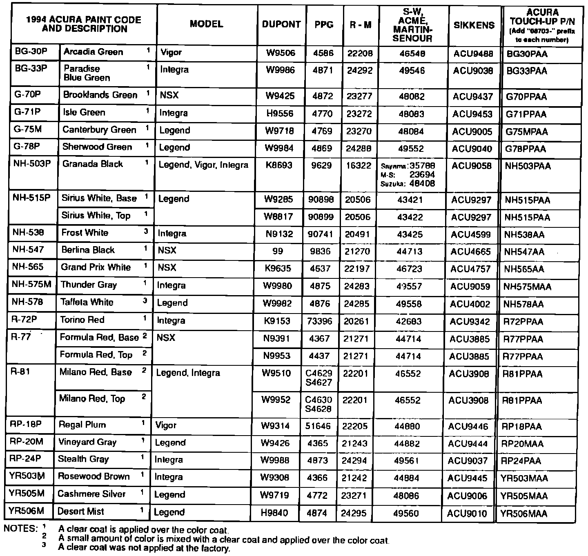

Paint Code Identification
October 12, 1993BULLETIN NO.
93-022
YEAR
1994
MODEL
ALL
VIN APPLICATION
ALL
1994 Acura Paint Codes

Paint formulations are determined by each paint company. For questions regarding formulas or matching, contact your local paint distributor or the paint company's nearest regional off ice. The information provided is for reference only. American Honda does not endorse any paint company or type of paint.
Original paint is acrylic enamel. Acura paint codes with "M" are metallic colors; those with "P" are pearlescent colors.
NOTE:
Herberts Standox and Spies Hecker use the Acura Paint Code as their paint intermix code.